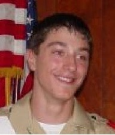
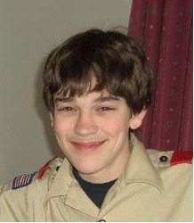
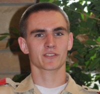
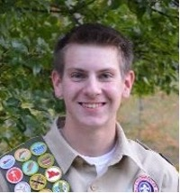
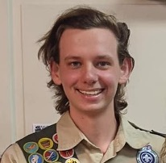

The Eagles' Nest
-
November 27, 2001 - Craig Iacovino
I took my first step on the Trail to Eagle in 1994, when I became a Tiger Cub. I did not know where scouting would lead me. Wherever it went, I wanted to have fun while I progressed on the path. My first experience camping was when my Dad took my brother Eric and me to Seneca Rocks, WVA. We almost got "attacked" by a surprised skunk.
I joined Troop 208 and made a lot of friends. I started to really learn about the wilderness and Boy Scouting. I learned how to kayak, canoe, build fires efficiently, be a good cook, to lead people, and how to play night games. I became a patrol leader. My patrol name was Chiquita Bananas. From there it was on to Eagle.
For my Eagle Project, sponsored by the Turtle Creek Watershed Association, I built three weirs at an abandoned mine site and took water quality measurements each month.
I can now look back on the long and hard path that I have traveled and see how Boy Scouting has changed me as a person. All the skills and friends I have made were as a result of that first step on the Trail to Eagle.
-
March 23, 2002 - Nat Wetzel
Eleven years ago, I joined Cub Scouts as a Tiger Cub due to my fascination with my dad's stories of his scouting days. At that time I had no clue how far I would go with it and how much that decision to join scouts would influence my life. After Cub Scouts, I soon became very active in the troop and was given the position of Scribe. After a few years of this I was promoted to Patrol Leader, then Assistant Senior Patrol Leader, and finally Senior Patrol Leader.
For my Eagle Project, I chose to reroute Heart Attack Hill (a very steep and dangerous trail) in Townsend Park so that it was more of a Heat Stroke Hill rather than Heart Attack Hill. After two years of hard work and planning, my Eagle Project was finally completed in December of 2001.
As my parents can attest, scouting has become a very important part of my life. Scouting has introduced me to life long friendships, rocking climbing, repelling, caving, canoeing, kayaking, backpacking, and how to cook and plan and be a leader and role model. These are things I will take with me for the rest of my life and hope to pass on to others around me.
-
August 23, 2002 - Jonathan Willard
I began my scouting career in 1990 when I became a Cub Scout in Pack 205. I joined Troop 207 in 1995 One year later my dad took over the role of Scoutmaster, and I was given the job of the Troop Scribe.
A year later I became a Patrol Leader, two years after that I became Assistant Senior Patrol Leader and then finally Senior Patrol Leader.
-
Octover 21, 2002- Ryan Matuza

-
January 7, 2003- Michael Taccino
-
February 17, 2004 - Eric Iacovino
My Trail to Eagle began when I joined Troop 208 in April 2000 after many years of fun in Pack 206. My patrol was named the Flying Monkeys. On my first camping trip Tim Forrester, Jon Courage, and I were in the same tent. We saw a big fly in the tent, tried to smash it, and in the process collapsed the tent. At my first Conestoga summer Camp, I remember playing Release at night and having fun. One of my favorite trips was to Glacier National Park in Montana. There I learned to ride a horse and how to hike in the mountains.
For my Eagle Scout Project, I designed and built (with help of many volunteers) a twelve-foot long bridge and twenty steps for the Franklin Regional Middle School Cross Country Course.
My Trail to Eagle Scout has been long, hard but fun.
-
August 16, 2005 - Jonathan Courage
Scouting has been a part of most of my whole life. It's hard to think of what I would have done without Scouting. I have made many friends over the many climbing, hiking, caving, and camping trips. When I first joined as a fifth grader, I looked up to the older scouts as role models. Willard, Nat, Ryan, Craig, MT3, John Rodgers, Alex, and Joe are just some of the faces I will always remember. As they all slowly left scouting behind, I found what it was like to be leader as the new generations came in. I'll always remember Scouting, whether it is sitting by the campfire and listening to Joe or Rodgers play guitar, playing night games or Magic at summer camp, or the long backpacking hikes with the troop.
My Eagle Scout project took just a little longer than I planned on. Thankfully I started during my freshman year, otherwise I may not had time to finish it. My project was to create a pathway up to the ex-cross country course that would make the course safer and more accessible to the team as well as the public. To do so I built several sets of railroad tie steps. The project was very time consuming but well worth it.
Overall, Scouting has been a long trail for me; one that I hope will never end.
-
December 12, 2005 - Tim Forrester
After Cub Scouts, I joined Troop 207 and met kids who would become lifetime friends. Troop 207 turned into 208, and we went on many fun trips like rock climbing at Seneca rocks, cycling at Pine Creek, and kayaking on many different rivers. I also remember helping scouts like Nat Wetzel, Ryan Matuza, Jon Willard, and Craig Iacovino with their Eagle Scout projects. After I had been in scouts for a while, we journeyed to Glacier National Park, Montana, for what would be possibly the best trip of my life. My journey though scouts has provided me with endless amounts of fun, friends, and great experiences.
With the help of many other scouts, I was able to complete my Eagle project and earn the rank of Eagle Scout. My project consisted of constructing four deer enclosure pens to illustrate the effect of deer overpopulation on forests. It took a long time but it was well worth it.
-
July 11, 2006 - Matt O'Brien
I can not say enough about how much I have enjoyed and learned in Scouts over the past six years. I have done things that I would have never done in my life otherwise. I have had a lot of fun, and I will never forget what I have done. I believe that the skills and knowledge that I have gained from everyone in my Scouting career will be a great help to me in the future.
For my Eagle project, I constructed a bridge over Sycamore stream in the Kellman Nature Reserve. The bridge I built was sponsored by the Municipality of Murrysville Parks Department. I wish to thank Michelle Clarke for all of her help and for providing me with everything I needed to build the bridge. The original "bridge" was two boards which went across the stream. The bridge that I built (along with over twenty volunteers) was sixteen feet long. I would like to thank the many people who helped me complete my project
-
August 14, 2006 - Douglas Komandt
I have been a Scout ever since I became a Tiger Cub with Pack 213 in First Grade. Throughout the many years I have been a Scout, I have learned many lessons and developed many memories during my Scouting experience.My favorite memory of Boy Scouting is summer camp. It is an entire week away from home to relax, have fun, and earn some merit badges while you're there. Summer camp is always a great time, with the "Anything That Floats" race, Parents' Night, and the prizes given out to the winners of camp competitions: Watermelons.
Another great memory I will always have of Scouting is my Eagle Project. For my project, I assembled fifty packages for the Meals on Wheels recipients. These packages included items like soap, toothpaste, thirty stamps, pens, pencils, washcloths, and playing cards. In order to fund the project, I raised over two thousand dollars, some of which came from selling over three thousand Krispy Kreme Doughnuts. I would like to thank my biggest helpers, Mike Elisco and my sister, Mary. They were there for all aspects of the project, from fundraising, to purchasing the items, to assembling and delivering the packages. I would also like to thank Mrs. Lynn Staab for allowing me to do my Eagle Scout project for Murrysville Meals on Wheels, as well as my parents and other family members who assisted me.
Overall, Boy Scouts has been a very rewarding experience, and I look forward to future Scouting activities. The memories of Scouting are ones that I will never forget.
-
October 17, 2006 - Kevin Iacovino
My Scouting experience started when I joined Pack 206 as a Tiger Cub. I remember doing a lot of crafts and making cars for the Pinewood Derby. In Fifth Grade, I embarked upon a long and rewarding journey in Boy Scouting.
I remember the first year in summer camp well. It was one of the best experiences of my life. I remember sitting around the fire in the evening, listening avidly to John Willard, Nat Wetzel, and the other big kids. During the night we really had fun, playing night games like Release and Capture the Flag, playing Magic Cards, or just sitting by the fire.
My Eagle Service Project was to improve the steam bank of Tinker's Run in Tinker's Run Park located in Irwin. When I first saw the stream it looked like an impossible task. There was Multiflora Rose Bush almost everywhere along the stream, and in some areas it covered the stream so thoroughly that it filled the streambed and blocked sight of the opposite bank. My Eagle Service Project took longer than I thought it would take. I started it in June 2005 and it took 14 months to complete.
I have had many experiences in Scouting, but the ones I cherish the most are the trips. I really had fun during the Seabase High Adventure Trip last summer, going shark and deep sea fishing. Scouting has been a great experience and one that I hope will continue the rest of my life.
-
March 20, 2007 - Chris Slotosky

A year after Cub Scouts, I transferred to Troop 208. I did things in Troop 208 that I never would have had the opportunity to do with my family, activities such as white water rafting, rock climbing, backpacking, hiking and camping trips. One summer I went to Sea Base and kayaked to a remote island; we went snorkeling, deep sea fishing, and shark hunting at night, a fabulous experience.
I have thoroughly enjoyed the friendships I have developed with the scouts and parents. These scouting friends offered me great help when it came time for me to lead an Eagle service project. I stabilized the stream bank along Bear Hollow Nature Trail using timbers and rock, and I built a bench along the trail with the help of my fellow scouts, parents, family and friends.
I also have been honored by my fellow scouts to be inducted as a member of the Order of the Arrow. Over the past few years I have completed the requirements to achieve Ordeal and Brotherhood.
The knowledge I gained from my scouting experiences is invaluable and will remain with me forever. I have had a lot of fun and feel very fortunate to have participated in scouting.
-
December 10, 2007 - Ian Hill
My Eagle Scout project was to help people in the Central Highlands Region of Guatemala. In conjunction with my church, the First Presbyterian Church in Murrysville, I planned to provide vitamins to patients during a church sponsored medical mission trip in 2006 near San Martin, Guatemala. My project involved fund-raising, vitamin collection activities, packaging, and distribution to the patients as they attended the medical clinics.
In this region of Guatemala people are very poor and they have no health care system. There are no doctors living in the area and the closest hospital is at least two hours away. Even when health care is required people cannot afford to get to the hospital, pay for the services of a doctor, or pay for any medicine. A visit to the doctor typically costs the equivalent of at least 4 weeks pay. Our mission trip and the vitamin collection project provided the opportunity for these people to see a doctor, receive some specialized medication, and a supply of vitamins to help them maintain their overall health after their clinic visit. The vitamins are necessary because most of the village people are malnourished and clean drinking water is generally not available. Through my Eagle Scout Project I collected over 86,500 vitamin tablets and raised over $2,250 which allowed us to purchase an additional 125,00 vitamins for the trip - over 200,000 tablets were packaged, transported, and distributed.
I wish to thank Scoutmaster Steven Foust, all of the Troop Leaders past and present, Parents of Troop 208 and the many other people who helped me through my cub scout and scouting journey. A very special thank you to everyone who contributed to or participated in my Eagle Scout Project. Without your support and assistance my project could not have been completed.
-
March 28, 2008 - Alex Foust

My trail to Eagle began when I joined Troop 207 in 2001. Shortly after I had joined Troop 207 the troop split, and I chose the new Troop 208.
One of my most fond memories was the New Jersey Battleship trip. Not just because I planned it, but because of the shear size and importance the ship had on the world. My favorite trip of all to date, however, would have to be Sea Base in July of 2007. While deep sea fishing I caught a Skip Jack Tuna that broke the camp record. Scouting for me has been full of funny moments but the hiking trip to Bear Run was one of the best. Sean O'Brien and I scared Mike Elisco to death about Bigfoot crouched in the mountain laurel outside his tent, When MT3 had to do his communication at Lynn Run, he had the whole camp laughing so hard we were in tears.
My Eagle Project came as I noticed some areas of the local community park of Sardis in need of improvement. I contacted the park committee and had my idea approved. By redesigning the jungle gym, I hoped to encourage the youth of Sardis to make better use of the park. While my project was only the first step in bettering the park, I believe it opened the floodgates for present and future projects to make this park the best that it can be for the residents and surrounding area of Sardis.
-
March 31, 2008 - Casey Courage
A wise man once said, "The journey of a thousand miles begins with a single step." - Lao Tzu
My Eagle Scout project has been my journey of a thousand miles. My first step all began when Mr. Preston Vock approached me about a possible Eagle Scout Project to build several park benches at the Upper Sloan field. I immediately accepted his offer and began to take the next step on my journey, planning out the project. But as we all know, the hardest part of anything in life is the beginning. After that, it just gets easier.
So for my first several steps I stumbled, I tripped over my own feet, I had a hard time getting up after I had fallen, but I persevered. I kept going. Slowly but surely, I made progress. I found a set of bench plans that I liked, I completed the paper work, and I got my project approved. The hard part of the journey was over. After that it just got easier.
The next step I took was to request the help of several older Scouts and experienced Scout leaders. Alex Foust, Ian Hill, Kevin Iacovino, my brother Jonathan, Mr. Foust, Mr. Matuza and my dad kindly accepted my request. With their help, I was able to take the final steps of my journey. Together we built the benches and installed them at the Upper Sloan field. I had completed my journey. I could finally sit down and look back with pride at my journey, my accomplishment, my Eagle Scout project.
-
August 27, 2008 - Arthur Siegel
Once the time came for me to officially join the Boy Scouts, I was more eager than ever to participate. My early experience in Scouting was excellent, with the opportunity to learn not only from older scouts such as Jon Willard and Nat Wetzel, but from those who were only a little older than me, such as Tim Forrester, Jon Courage, Matt O’Brien, and Craig and Eric Iacovino. I remember that when I was Stuart Little in an Apple Hill Playhouse production, many of the scouts came to show their support. I had even better times at Camp Conestoga, which has produced many of my favorite memories in Scouting. Without the Pathfinder program I would never have advanced in rank as quickly as I initially did, and without programs such as COPE, I would have never conquered my fear of climbing and heights.
Scouting has provided me not only with social and adventure opportunities but leadership experience as well. I know all too well how hard it can be to manage some younger Scouts, but I had some great examples to follow as the leadership in the troop shifted from an older generation to our generation. I hope that at the very least I can use my Scouting experiences, if not in the wilderness, but in daily life. If there’s one thing I have learned it’s the importance of being, yes, prepared. I can tell you that a lot of complications can be avoided when planning a project if you think ahead.
-
September 17, 2008 - Josh Sloss
After I received the Arrow of Light Award, I crossed over to Troop 208, and I was welcomed by Scoutmaster Tom Willard of Troop 208, joining with most of my friends.
As I worked though the Scout ranks, many people helped me along the way. I can't claim I did this on my own because I didn't. Everyone in the troop helped me get to where I am, and I am grateful to all of them - the adults on the troop committee that planned our activities and trips, those who became counselors and help us work through all the merit badges, and those on the advancement committee. In addition to all these people, there are some special people I personally want to thank who have stood with me and by me and were always there when I needed their help and guidance. Special thanks to: Mr. Foust for all the time he has put into the program, especially coming down and being our crew leader at Sea Base. Mr. Willard for being there as our Scoutmaster in the early days, making us feel welcome and accepted. Mr. Plance for teaching us the outdoor skills that we used every summer camp. Mrs. Iacovino for dragging me through the Personal Fitness Merit Badge and never giving up. Mr. Lynch for all the hikes and camping experiences, Sea Base, and of course, going to your "Man Camp" at St. Mary's. And Mrs. Boren for all the work you did leading our troop committee and signing the last signature on my Eagle application four hours before I turned 18.
At the end of the trail, Scouting isn't just about tying knots or completing badges. Learning those skills is a lot of fun and part of the adventure. But along the way we learn more important things, the lifelong values of Scouting contained in the Oath, Law, and Motto. Through the lives of those that have encouraged us and have led us along the trail, Scouting becomes our way of life. The way of Scouting is now a part of us, how we think and act. We take these values with us when we move on, and now it is our turn to pass them on to others. The skills I've learned here in Troop 208 will help me greatly as I take on the next challenges in life such as finishing college and establishing a career. The Scout Motto is "Be Prepared". You never know when you will need to be able to tie a bowline knot in the dark, rescue somebody from the water, or have the courage to stand up for what you know is right.
-
March 16, 2009 - Fred Mejia
Troop 208 has brought me many memories that I will remember for the duration of my life. All of the summer camps had their own special moments. The water balloon wars over the last three years or so with neighboring campsites, playing night games, cutting down mass amounts of trees and building fires so big you wouldn’t believe. The Air, Land and Sea Camporee where it rained, hailed and snowed was surely an adventure I will never forget as was our overnight trip to the Battleship New Jersey. I guess I don’t have one favorite memory from scouting; they all hold a special place in my life.
For my Eagle Project, I wanted to give back to my church as it has given so much to me. The church’s pavilion across the street was without picnic tables for 3 years, and when the church had events, they had to take the time to transport tables and chairs from Laird Hall across to the pavilion. This was backbreaking, time consuming work. I met with the property committee, including Tom Ronksley and Dan Freyer, to discuss building picnic tables as my Eagle Project. They and Pastor Chuck were enthusiastic about this project and many church members donated money to buy the needed materials. With the help of my fellow scouts, we built the eight picnic tables that are in the pavilion today. I am grateful not only for the help I received on the project, but also for everything the congregation has done for me that has helped me become who I am today.
-
April 6, 2009 - Michael O'Neill
-
April 29, 2009 - Mathew Peterson

With warm appreciation, I would like to thank everyone who has helped me through my Scouting experience, including my fellow scouts, my many adult leaders, all those who provide support to the Scouting program, and my parents. I have learned lessons and formed friendships that will last a lifetime. I also want to thank the congregation of Emmanuel Lutheran Church for supporting my Eagle Scout Service Project. I especially want to thank and recognize my dedicated Scout Masters whose commitment to the Scouting program made my journey possible. Paul Wells (Troop 112 Rutlan, Vermont), John Record (Troop 105 Rutlan, Vermont), Steve Foust (Troop 208, Murrysville PA)
-
May 11, 2009 - Nathan Evanko
Scouting has been a part of my life as long as I can remember. It has been one of the most influential and rewarding experiences of my life and through the many rank advancement requirements, leadership opportunities, and merit badges, has greatly shaped the person I am today. Scouting has provided many opportunities to learn new skills and granted experiences would have missed out on, like canoeing on the Yough River, or rock climbing at Cooper's Rock, where I memorably ended up landing upside down. I still clearly remember struggling through on the 34 mile Connellsville bike hike when I was in 6th grade. Nothing but sheer perseverance got me through that day. Looking back on it now, it was a building block to where I am today. Although I never got the biking merit badge, it's a memory along with a million others I shall always hold dear.
My Eagle Scout Project consisted of repainting the facilities at the playground in Export and the cleanup of the adjacent creek bank. Carrying out the project was a relatively straightforward task. However while the creek cleanup was done swiftly with a great deal of troop and cub scout support, the painting of the park facilities took far longer than expected. Looking back now, I feel that it was a very rewarding project and definitely worth the time and effort. The playground is in much better shape for neighborhood kids. I'm sure my Boy Scout experiences will follow me throughout my life. Years from now, I shall look back at all I've done and still feel very proud.
-
May 12, 2009 - Sean O'Brien
One of my great memories from Scouts is the hiking trip to Glacier National Park last summer. It was so beautiful when we got there, that I couldn't even describe it to my parents when I called them on the phone because I couldn't think of the right words to say. This reminded me again of one of the main reasons I joined Scouts in the first place - my love of the outdoors and nature.
I have many people to thank for helping me to get my Eagle especially my Uncle Frank. One time, when he was visiting our house, he read a section from the book "The Last Lecture" by Randy Pausch to me. In it, Pausch said "When I was interviewing people to work for me, and I came upon a candidate who had been an Eagle Scout, I'd almost always try to hire him." Think about it. Becoming an Eagle Scout is almost the only thing you can put on your resume at age 50 that you did at age 14 - and it still impresses.
I also want to thank my parents, my brother, Mr. Foust, and Mr. Lynch, all of my friends, and other scouts and their families for always asking me how my project was going and asking if I needed any help. A special thanks is extended to Mr. Slatosky for devoting his time and expertise to help get my Eagle done. I could not have done it without you. Also, I want to thank Sardis Community Park Board and Mr. Lucas for giving me the opportunity to do this Eagle project.
There are two sections near the entrance of Sardis Community Park that contain plaques honoring the local men and women who have served in the armed forces. These sections had become somewhat weedy and overgrown, the plaques tended to blend into the existing landscaping, and they did not look as if they were related to each other. My plan was to clean up both areas, and then make them stand out by the use of landscaping. We first removed all of the dead weeds, shrubs, and grass that were in this section. We then cleaned up the plaques and the millstone with a power washer. Then to make them stand out, we outlined both areas using pressure treated lumber beams and planted some attractive low maintenance plants inside the two areas.
-
June 1, 2009 - Micheal Elisco
I joined the scouting program as a tiger cub in kindergarten. I was part of pack 205 until I became a member of troop 208 in 2002. As a member of the troop I went on countless trips, everything from Florida Sea base to winter camping in St. Mary's. I've held several positions in the troop from patrol leader to senior patrol leader. I also severed a short time as a den chief and staffed four different National Youth Leadership training courses.
Scouting has taught me many things about leadership and being apart of a team. I'm sure the lessons that I learned will have a positive impact on both my professional and personal life. Scouting has also given me a love of the outdoors that I will keep for ever.
-
June 2, 2009 - Jeremiah Lynch
Jeremiah’s Eagle project involved landscaping and building a concrete curb at Mother of Sorrows church. He, along with the help of his fellow scouts, formed raised flower beds and framed and poured a 200-foot curb to facilitate a pleasantly landscaped area between an office building and parking lot. His project would serve to divert water flow away from the building’s foundation while preventing damage to grass and flowers from pedestrians.
-
July 22, 2010 - Daniel Plence
One Sunday after church we had a church picnic at the church pavilion. Over the course of the picnic I observed how dysfunctional the set up of the electrical, tables, and ground were. So then I got the great idea to remodel the picnic pavilion at my church. I presented the idea to church council, and they were thrilled about it! So we got right to work! We painted the exterior of the pavilion, stained all the picnic tables top to bottom, installed a new 220 service to the pavilion along with 18 weather proof lights, an abundance of electrical outlets, new gravel to level the ground, installed a new sign, landscaped around the front and mulched around the trees. This project took several work days and a total of over 300 man hours.
-
January 10, 2011 - Aaron Mejia
For my Eagle Scout project, I wanted to try and do something for my church because they have done so much for me. As I went around looking for possible projects to do, I came across our sand volleyball court and noticed that it could use some improvement.
For the first phase of my project, we cleared the backside of the court which was overcrowded with weeds and trees that had been growing there for years. Also, the net that kept the ball from rolling down the hill was damaged beyond repair from the overgrown weeds behind it. To fix this, we tore down the damaged net, cleared out all of the weeds and trees, some of which had grown through the net, and put up a new net.
The next part of my project had to deal with the court itself. One of the problems was that there was no clear boundary between the court itself and the grass where people could watch the games. We created a boundary using 2 X 12 pieces of wood that we buried in the sand. We covered the wood with white pvc pipe to create a border that would clearly show the difference between the volleyball court and the grass. The border also contains the sand much better. As a final part of the project, the sand was cleared of all sticks, stones and leaves and was thoroughly raked and smoothed out.
Overall, the project was successful and went well. I would like to thank everyone who participated and donated to the project. I would also like to thank all of the leaders and parents in our troop who make this a fun and strong troop.
-
June 7, 2011 - Gregory Foust
For my eagle project, I turned an area of Scouting Knob, a wooded area near Murrysville Community Park, into a camping spot. A location was picked with the help of leaders from the troops of Murrysville, as this was to be the beginning of several other Eagle Projects, and construction started. Materials had to be hauled down a path and then up a hill to the site. Three 10'x10' areas and one 16'x16' area were cleared, leveled, weed-blocked, framed with 6"x6" timbers, which were secured with rebar, and finally filled with gravel. Next, a fifth area was cleared, weed-blocked, and covered with gravel to serve as a fire area. A several hundred pound earth-mover wheel rim was manhandled up the hill to serve as the fire ring. Last, a trail was blazed from the camping site to the hiking trail.
Thank you to everyone who helped me complete my project. There were 450 man hours were put in over the duration of a month by a total of 44 volunteers. I would also like to say thank you to everyone who has helped me reach the rank of Eagle. That includes everyone from the parent helpers in my Cub Scout den to the members of my Eagle Board of Review. Finally, thank you to the special people who have made my scouting experience the most enjoyable and memorable part of my life: the Mejias, Plances, Lynches, Rosporskis, and everyone else that made scouting wonderful for me.
-
September 28, 2011 - Zachary Lynch
I came to troop 208 in February 2005. Within a few years, I was the only scout left in my grade. That was OK though because I got along with kids of any age.
When I think back on scouting there are a few pictures that really stand out in my memory. One is a view from summer camp. I can picture standing on a bench at Paiute, looking down across the field to see hundreds of other boys, some wielding pool noodles, others with water balloons, and even someone dressed up as Spiderman.
Another image, or group of images rather, that sticks out in my mind is Montana. You can't get the true meaning of Big Sky State until you go there. The enormous mountains and bright stars make me want to go back. Our trip to Montana was the best trip I've ever taken in my life.
The last image that sticks out for me is walking through tunnels underneath the Capitol Building. I was able to do this with my NYLT course, and it was a once-in-a-lifetime experience.
The crowning achievement of my scouting career was my Eagle Project. I did my project for Sardis Park, and it involved building, painting and installing a big "V"-shaped sign and building a retaining wall around it. It's a great feeling to drive by the park and be able to see something that I designed and built with some help from my fellow scouts and leaders.
-
November 5, 2012 - John Mathews
-
December 10, 2012 - Mathew Plance
My project consisted of refurbishing the outdoor beehive oven at the Staymates Log House in Murrysville. Together with the help of my Boy Scout Troop and family, we were able to construct a new roof, white wash, point the chimney, and replace the doors on the oven. Along with the repairs to the oven, we refurbished the water well and stone wall nearby. We restacked the stone, and placed a grate on top to keep objects from falling down the well.
-
September 10, 2013 - Ryan Baker
For my Eagle project, I wanted to give back to my Elementary School and church, Mother of Sorrows, for the countless hours that shaped me into who I am today. I wanted to build something not only useful for the school and church, but also something that will last for many years to come. After much consideration and working with the school, the church, and the diocese, I decided to construct a concrete patio with three picnic tables and to landscape the area around the patio. My project involved removing two trees, stripping grass, digging out several cubic feet of soil, fundraising more than $3,000, constructing the concrete patio and picnic tables, and landscaping the remaining area with mulch. With the help of several skilled professionals, my friends, my family, and my Troop, I successfully completed my Eagle project in late June, 2013. In total, 37 different people helped me, 293 total man hours were donated, and almost $3,500 were spent towards my project.
I now would like to thank those who have helped me with Eagle project. I thank BJ Tree Service, Creative Landscaping, GAI Consultants, A.E. Nicholas, and Hoss’s Steak and Sea House for donating materials and supplies towards my project. I would like to thank all the compassionate parishioners for donating their money towards my fundraising efforts. I would also like to thank my Troop, my friends, and my family for donating their time and helping me achieve the rank of Eagle. Achieving the rank of Eagle is an important step towards my future, and all the people that helped me attain this have touched my heart in so many ways. My time as a Boy Scout may end soon, my Eagle project may someday diminish, but my Eagle rank and my memories of scouting will be with me forever.
-
September 16, 2013 - Jason Bauer
My Eagle Scout project was to build a footbridge that connects the Tar Hallow Road parking lot to the Newlonsburg Presbyterian Church parking lot. Constructing this bridge required 642 linear feet of lumber, 1152 fasteners, 2300 pounds of concrete, 28 angles & brackets, and 78 helping hands, and resulted in 5089 pounds of solid bridge.
Thank you scouts, scouting friends, and family for your contribution to my Eagle Service Project and for your many years of support throughout my time in scouting. You have given me and my family a lifetime of fond memories.
-
October 8, 2013 - Micheal Friend
 -
November 19, 2013- Thomas Landi
For my Eagle Scout Service Project, I designed and constructed a small park where people could sit and view the remnants of the fan house, near the Southern coal mine, in Export. The Borough of Export graciously provided all of the funding for my project. Councilwoman Mrs. Melanie Litz was the main contact from the borough throughout the project. It was determined that a small gravel parking lot with a trail would be laid down along with flora to surround it. Also, two benches and a solar light would be installed.
First, I met with a contracting company, in order to plan exactly where the parking lot would be, along with the short path. Once the hillside was terraced, the base layer of the parking lot was laid down, and then the final surface gravel for the path and parking lot. After all of the work requiring heavy machinery was done, we carefully positioned large rocks to surround the edges of the parking lot and path. Then we planted the flowers and bushes. Export Floral was extremely helpful in this process. Next, the mulch was laid down around the entire space. Then the concrete bench forms were purchased and the wood was stained. The two constructed benches were placed at the end of the path and a small solar light was installed to illuminate the remains of the fan house during the night.
-
December 17, 2013 - Carmen Rosporski
-
May 5, 2014 - Andrew Roote
-
September 15, 2014 - Kevin Fu
-
December 2, 2014 - Winston Fu
-
December 8, 2014 - Josh Millbauer
-
February 2, 2015 - Nick Pierce
My scouting journey began when I was in the 3rd Grade. I grew interest from some of my friends enjoyed being a Cub Scout. I earned the Arrow of Light in 2008 with pack 213 and bridged over to Troop 208 with 7 other scouts.
In these 7 years, I went on many trips, helped out at service opportunities, and enjoyed activities with the troop. I went to nearly every summer camp with the troop other than my first year. I also participated in visiting the 2010 National Jamboree at Fort AP Hill and the 2013 Nippon (Japanese) Jamboree at Yamaguchi, Japan. I was tapped out into the OA which was a great honor.
For my project at the Old Lutheran Church in Export, we landscaped around the church, cleaned the inside of it, as well as made a photographic record of the cemetery.
-
February 25, 2015 - Micheal Iacovino
-
March 30, 2015 - David Gustafson
David's Eagle Scout Project transformed an old rugged looking bridge into a new center piece of Export. Instead of leaving the old, wobbly bridge in its place, David replaced it with a newer sturdier bridge that will enable people to safely cross the creek. This project was a reflection of David's journey to Eagle. It had many bumps in the road and small issues that needed to be resolved, but an Eagle Scout does not find a way around a problem, he instead finds a way to solve the problem through ingenuity and the desire to always better themselves.
-
November 7, 2015 - Josh Hill
Josh's Eagle project was the installation of a flag pole, lighting, and walkway at Emmanuel Lutheran Church. Having a flag pole at the church had long been a wish for ELC. Josh, along with help from the troop, installed the flagpole near the end of the parking lot along with lights that illuminate the flag after dark. A stone paver walkway leads up to the flagpole. Josh sold engraved pavers as a way to fund the project and also to give parishioners an opportunity to be part of the project by engraving their names or special messages on the pavers. Josh is grateful to all the scouts, friends, adult leaders, parishoners, and family who helped him with this project.
-
November 21, 2016 - Andrew Roote
Andrew's project was the installation of a split rail fence and planting of trees along the Westmoreland-Heritage Trail near the railroad car in Export.
-
March 22, 2017 - Jacob McLeigh
Jacob's project was the installation of light poles along the entrance drive of Emmanuel Lutheran Church.
-
September 11, 2017 - Jacob Aceves
Jacob's Eagle Project was landscaping the trailhead for the Westmoreland Heritage Trail in Delmont. Jacob along with help from his fellow scouts planted trees and bushes at the trailhead, and stabilized the hillsides with landscaping fabric and groundcover plants.
-
Novmeber 13, 2017 - Michael Rossi
Michael built a storage shelter for firewood and enclosed the wood chopping area by installing a fence at Scout Knob.
-
December 19, 2018 - Matt Wareham
Matthew's project was the construction of a picnic pavilion at Scout Knob.
-
May 20, 2019 - Alexander Pierce
Alex's project was building picnic benches for the pavilion at Scout Knob.
-
March 9,2022 - Adam Lucci
My Eagle project was to build a chimney swift habitat in the Murrysville Community Park Wetlands. Chimney swifts are birds that build nests in chimneys, but their population has been declining over the past decade partially due to lack of habitat. I partnered with The Audubon Society to construct a fifteen foot tall wooden chimney swift tower to provide a habitat for nesting chimney swifts. The tower is surrounded by a kiosk which displays educational material about these birds. Hopefully, this project will provide a habitat for nesting chimney swifts, have a long lasting positive effect on our community’s environment, and educate the people of our community about the importance of these birds.
-
October 5, 2020 - TJ Schreck
TJ's project was building a covered hammock shelter pavilion at Scouting Knob off Bollinger Road. The roofed pavilion features 6-inch-by-6-inch posts sunk into the ground in a “U” configuration, with enough heavy-duty eye bolts in the posts to hang nine hammocks. This project will benefit the scout troops that use Scout Knob while also benefiting the environment since many scouts had begun bringing hammocks, either to sleep in or just to relax. The pavilion provides a place to hang hammocks while preventing damage to trees for any of the wildlife.
-
October 15, 2020 - Trevor McLeigh
Trevor's project was building two roofed picnic table near the Murrysville Community Park Splash Pad. This project had been on the municipalities “wish list” of projects to benefit the park.
-
October 19 2020 - Ian Sunny
I began scouting in the first grade when I joined cub scouts with Pack 207 and since then I have learned and grown so much alongside some great friends and leaders. When I was 12, I began my journey into Boy Scouts with Troop 208. As I worked my way up the advancement ladder, I experienced the program and all that it had to offer. From wilderness survival camping to 50 mile canoe trips to merit badges, the scouting program has something to offer to everyone.
When it came time for me to begin work on my Eagle Project I was excited to take the first steps towards this goal that I had in mind for the last six years. After some suggestions from Carly Greene, I decided that I would revitalize and provide maintenance to military headstones in the Murrysville Cemetery across from Laird Hall. Using an eco-friendly chemical cleaning agent, I was able to remove years of built up dirt and biological debris from the stones that had blackened them and made them unreadable. Thanks to the 100+ hours of volunteer work, I was able to clean 35 headstones of military veterans. Seeing the kind of impact that my project had on the community only made this accomplishment more worthwhile. Not only do I now get to wear the Eagle Badge and carry that title, I get to have the satisfaction of knowing that I impacted someone's life and legacy in a positive way.
-
Februray 25, 2021 - Nathan Meyer
I joined Cub Scouts when I was 6 years old and bridged from Webelos 2 in the Spring of 2016. I jointed Troop 208 later that year. My time with 208 has been a rewarding and continuous adventure.
My Eagle Project involved building bike racks for Export Boro. The Boro Council was very supportive, since the newly-opened Heritage Bike Trail was bringing lots of new visitors through town. Having the bike racks near the trail provides a place for visitors to leave their bikes to visit local establishments. This generates additional business for the local shops in catering to the bikers.
-
April 15, 2021 - Seth Shoemaker
Seth started his Eagle journey in first grade as a tiger scout with Pack 553 in Leechburg. In fifth grade Seth crossed over into Troop 553. When Seth’s family moved to Delmont, he transferred into Troop 208 where his Eagle journey culminated. Seth’s Eagle project was one that Murrysville Parks and Recreation had on their list for some time. Existing trail signs in Townsend park were falling upon disrepair as well as new trail signs were desperately needed to help park patrons navigate the trails. Seth organized a car wash and volunteers to help with a 5K Trick or Trot and a 10k Turkey Trot. Seth’s trail signs in Townsend park can be found along the Ron Stoll trail, Spicebush Trail, and Pine Grove Trail.
-
August 22, 2021 - Issac Lynch